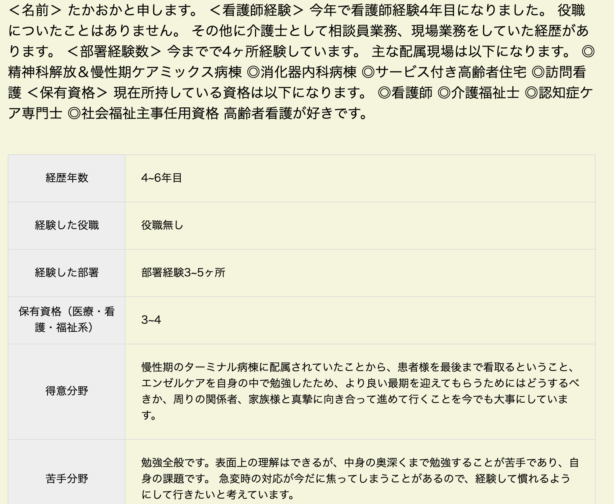
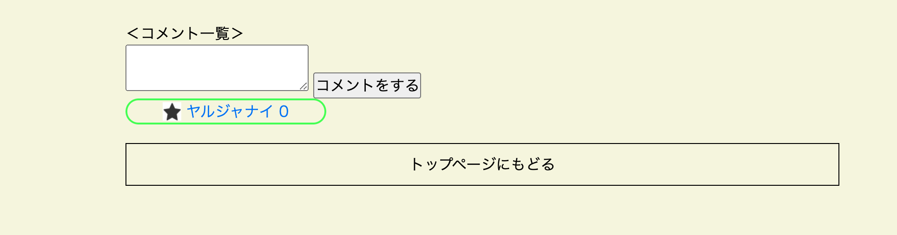

yaru-ja-nai-ヤルジャナイ-
（看護師専門プロフィールSNS）
開発環境
Ruby / Ruby on Rails / MySQL / GitHub / Heroku / Visual Studio Code / Trello
-
概要
制作時間 150時間 URL https://yaru-ja-nai-37240.herokuapp.com/ ID yuichi PASS 2538 -
動作テスト
テスト用アカウント
mail citrus@icloud.com PASS 123456a
OUTLINEアプリケーションの概要
オリジナルアプリケーションとして、自身の看護師としてのプロフィールを投稿できるSNSを開発しました。
主な機能は、ユーザー登録機能、プロフィール投稿機能、プロフィール検索機能です。
トップページにアクセスすると、様々なプロフィールを見ることができます。それをクリックすると、他者のプロフィールを閲覧できます。
気になるユーザーのプロフィールにコメントが書けます。
プルフィール検索機能では自身が気になるワードを入力し、絞り出せます。
-
開発に至った経緯
看護師と言う職業をしてきて、もっと企業様に見つけてもらいやすいやり方はないか、自身を振り返ることができるやり方はないかと模索していました。
人事の立場になって考えた結果、どういった経歴なのか、何を経験してきたのかを専門的な部分で見て、面接をしてみたいと考えました。
そこで、フリマアプリなどを参考に、プロフィールを投稿、閲覧できるSNSを作成したいと考えました。
-
開発で工夫したこと
1つ目が本アプリケーションのポイントであるプロフィールの投稿機能です。自己を振り返って書き込めるようにしています。
2つ目が検索機能です。rubyのgem、ransackを使用し、検索機能を実現できました。気になる人材を探すことができます。
3つ目はコメント機能です。気になる相手に対して、コミュニケーションを取ることができ、非同期通信にし、リダイレクトをせずにスムーズにコメントができます。
いずれも、ユーザーヒアリングを行いながら改善を行っています。
-
今後実装したいと思っていること
非同期通信を用いて、いいね機能（ヤルジャナイ）を実装したいと考えています。
理由としては、企業様が閲覧した際に、いいね機能が多いプロフィールだとスカウトやコメントで話を深掘りでき、いいねされた側は自身の選択肢の幅が広がるからと考えます。
そこで、ユーザー同士のコミュケーションの一環、人材の見つけやすさを主旨に入れると、いいね機能があったほうが、企業側も評価しやすくなり、自身の自信にもつながると考えます。